二叉树 树的递归遍历框架
1 2 3 4 5 6 7 8 void traverse (TreeNode root) traverse(root.left) traverse(root.right) }
二叉树的重要性 快速排序就是二叉树的前序遍历，归并排序就是二叉树的后序遍历
快速排序的逻辑是，若要对 nums[lo..hi] 进行排序，我们先找一个分界点 p，通过交换元素使得 nums[lo..p-1] 都小于等于 nums[p]，且 nums[p+1..hi] 都大于 nums[p]，然后递归地去 nums[lo..p-1] 和 nums[p+1..hi] 中寻找新的分界点，最后整个数组就被排序了。
快速排序的代码框架：
1 2 3 4 5 6 7 8 9 void sort (int [] nums, int lo, int hi) int p = partition(nums, lo, hi); sort(nums, lo, p - 1 ); sort(nums, p + 1 , hi); }
先构造分界点，然后去左右子数组构造分界点，你看这不就是一个二叉树的前序遍历吗？
再说说归并排序的逻辑，若要对 nums[lo..hi] 进行排序，我们先对 nums[lo..mid] 排序，再对 nums[mid+1..hi] 排序，最后把这两个有序的子数组合并，整个数组就排好序了。
归并排序的代码框架：
1 2 3 4 5 6 7 8 9 10 void sort (int [] nums, int lo, int hi) int mid = (lo + hi) / 2 ; sort(nums, lo, mid); sort(nums, mid + 1 , hi); merge(nums, lo, mid, hi); }
先对左右子数组排序，然后合并（类似合并有序链表的逻辑），你看这是不是二叉树的后序遍历框架？另外，这不就是传说中的分治算法嘛，不过如此呀。
写递归算法的秘诀 写树相关的算法，简单说就是，先搞清楚当前 root节点该做什么，然后根据函数定义递归调用子节点 ，递归调用会让孩子节点做相同的事情。
算法实践 翻转二叉树 我们发现只要把二叉树上的每一个节点的左右子节点进行交换，最后的结果就是完全翻转之后的二叉树 。
1 2 3 4 5 6 7 8 9 10 11 12 13 14 15 16 17 18 19 TreeNode invertTree (TreeNode root) { if (root == null) { return null; } TreeNode tmp = root.left; root.left = root.right; root.right = tmp; invertTree(root.left); invertTree(root.right); return root; }
二叉树题目的一个难点就是，如何把题目的要求细化成每个节点需要做的事情 。
填充二叉树节点的右侧节点
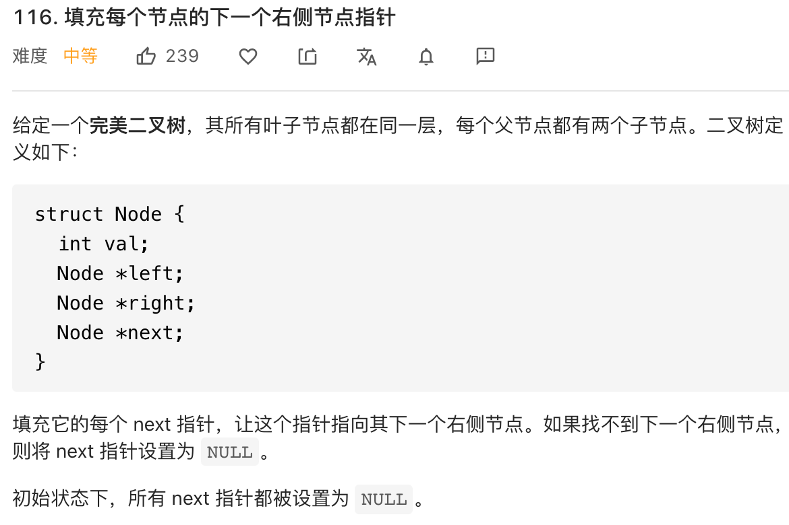
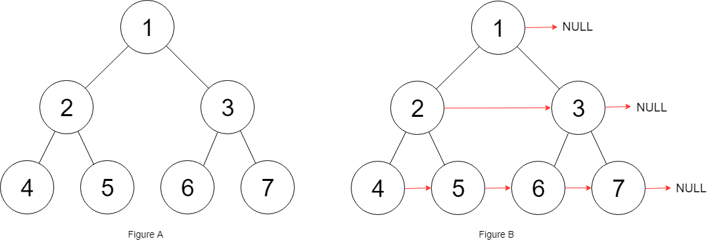
1 2 3 4 5 6 7 8 9 10 11 12 13 14 15 16 17 18 19 20 21 22 Node connect (Node root) { if (root == null) return null; connectTwoNode(root.left, root.right); return root; } void connectTwoNode (Node node1, Node node2) if (node1 == null || node2 == null) { return ; } node1.next = node2; connectTwoNode(node1.left, node1.right); connectTwoNode(node2.left, node2.right); connectTwoNode(node1.right, node2.left); }
这样，connectTwoNode 函数不断递归，可以无死角覆盖整棵二叉树，将所有相邻节点都连接起来
将二叉树展开为链表
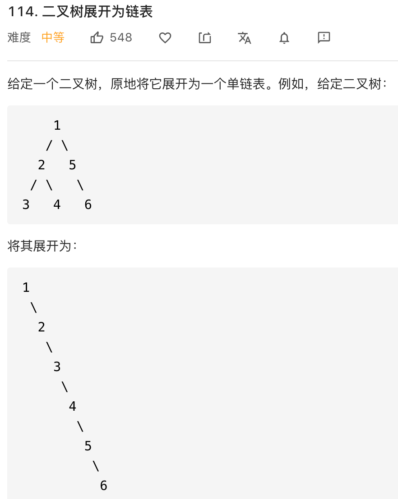
我们尝试给出这个函数的定义：
给 flatten函数输入一个节点 root** root 为根的二叉树就会被拉平为一条链表**。
我们再梳理一下，如何按题目要求把一棵树拉平成一条链表？很简单，以下流程：
1、将 root 的左子树和右子树拉平。
2、将 root 的右子树接到左子树下方，然后将整个左子树作为右子树。
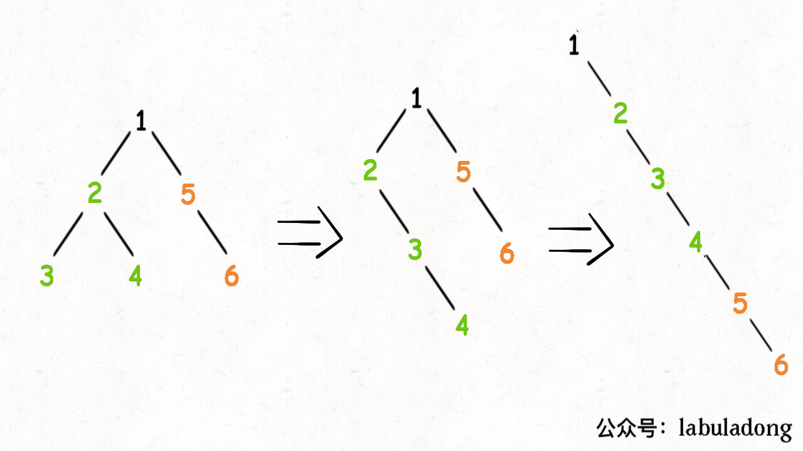
1 2 3 4 5 6 7 8 9 10 11 12 13 14 15 16 17 18 19 20 21 22 23 24 void flatten (TreeNode root) if (root == null) return ; flatten(root.left); flatten(root.right); TreeNode left = root.left; TreeNode right = root.right; root.left = null; root.right = left; TreeNode p = root; while (p.right != null) { p = p.right; } p.right = right; }
构造最大二叉树
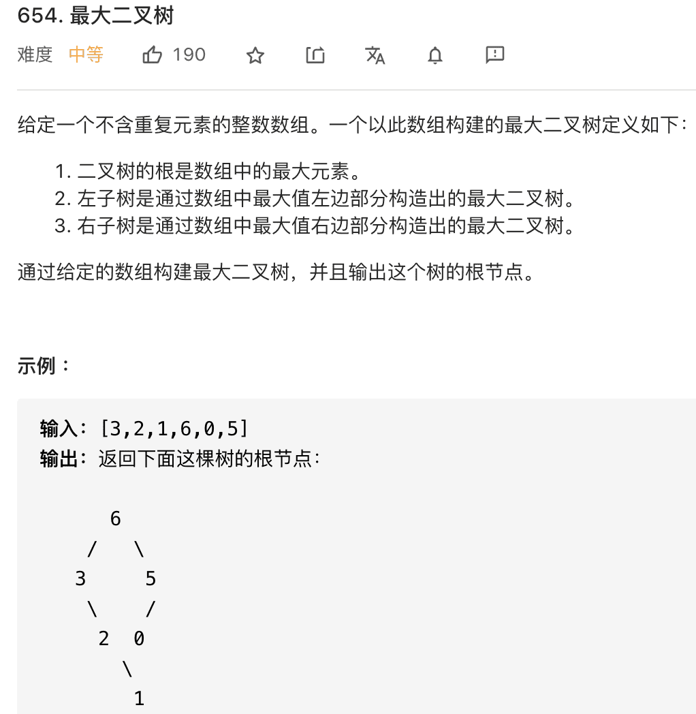
我们肯定要遍历数组把找到最大值 maxVal，把根节点 root 做出来，然后对 maxVal 左边的数组和右边的数组进行递归调用，作为 root 的左右子树。
对于每个根节点，只需要找到当前 nums中的最大值和对应的索引，然后递归调用左右数组构造左右子树即可 。
通过前序和中序遍历结果构造二叉树
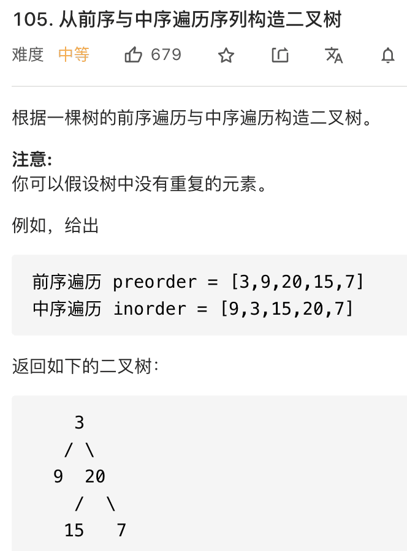
类似上一题，我们肯定要想办法确定根节点的值，把根节点做出来，然后递归构造左右子树即可 。
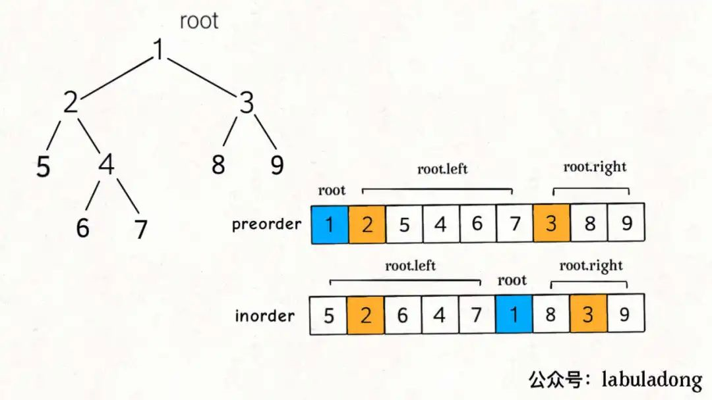
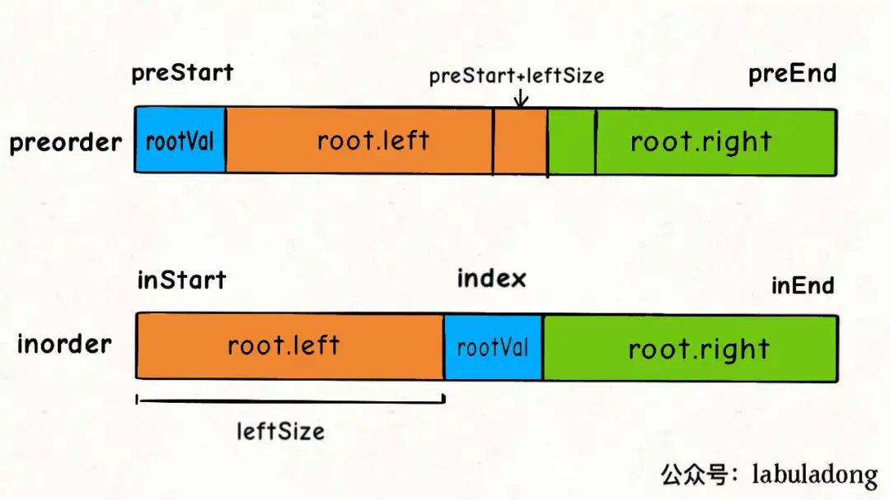
1 2 3 4 5 6 7 8 9 10 11 12 13 14 15 16 17 18 19 20 21 22 23 24 25 26 27 28 29 30 TreeNode build (int [] preorder, int preStart, int preEnd, int [] inorder, int inStart, int inEnd) if (preStart > preEnd) { return null; } int rootVal = preorder[preStart]; int index = 0 ; for (int i = inStart; i <= inEnd; i++) { if (inorder[i] == rootVal) { index = i; break ; } } int leftSize = index - inStart; TreeNode root = new TreeNode(rootVal); root.left = build(preorder, preStart + 1 , preStart + leftSize, inorder, inStart, index - 1 ); root.right = build(preorder, preStart + leftSize + 1 , preEnd, inorder, index + 1 , inEnd); return root; }
通过后序和中序遍历结果构造二叉树
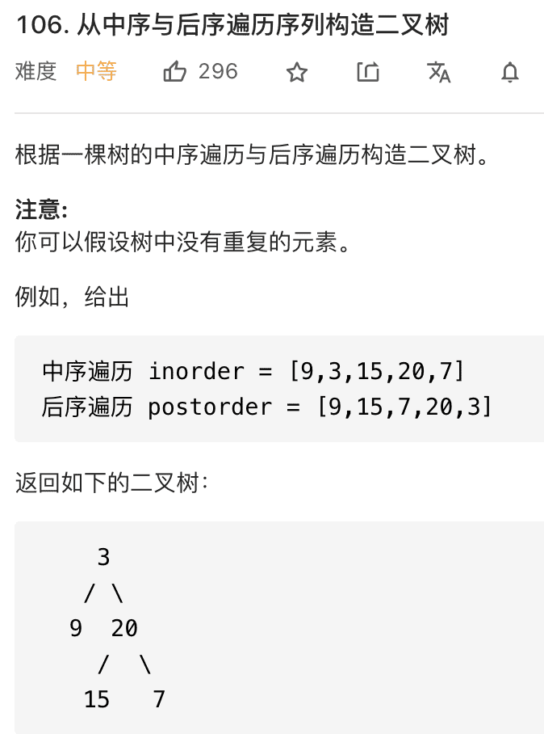
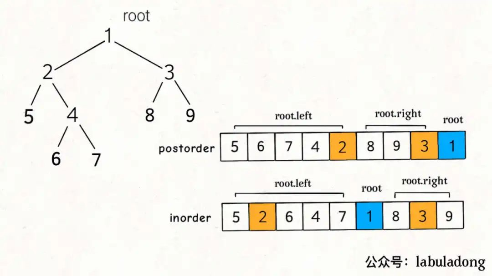
这道题和上一题的关键区别是，后序遍历和前序遍历相反，根节点对应的值为postorder的最后一个元素。
整体的算法框架和上一题非常类似。
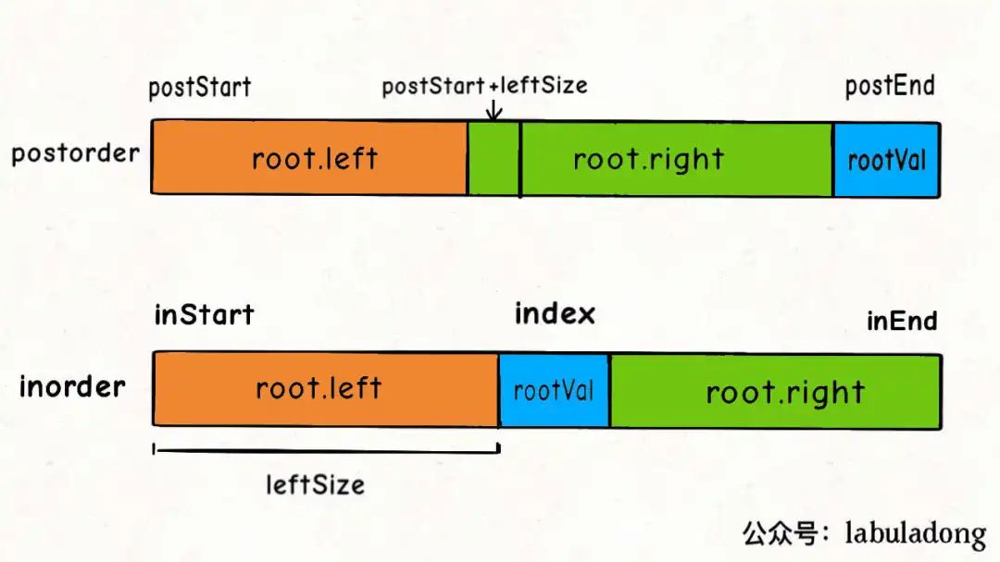
1 2 3 4 5 6 7 8 9 10 11 12 13 14 15 16 17 18 19 20 21 22 23 24 25 26 27 TreeNode build (int [] inorder, int inStart, int inEnd, int [] postorder, int postStart, int postEnd) if (inStart > inEnd) { return null; } int rootVal = postorder[postEnd]; int index = 0 ; for (int i = inStart; i <= inEnd; i++) { if (inorder[i] == rootVal) { index = i; break ; } } int leftSize = index - inStart; TreeNode root = new TreeNode(rootVal); root.left = build(inorder, inStart, index - 1 , postorder, postStart, postStart + leftSize - 1 ); root.right = build(inorder, index + 1 , inEnd, postorder, postStart + leftSize, postEnd - 1 ); return root; }
寻找重复的子树
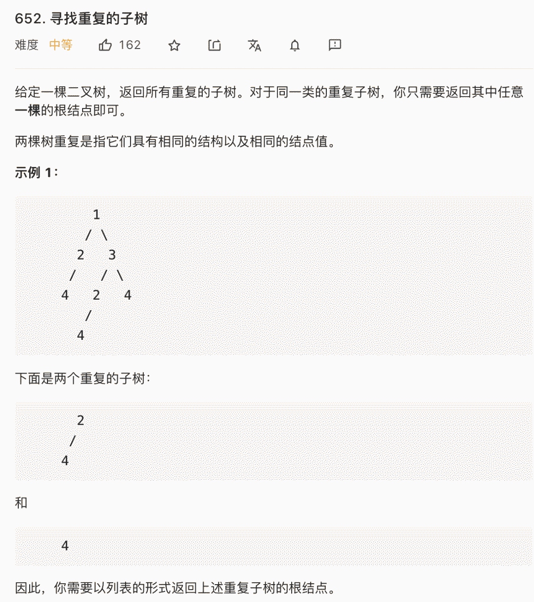
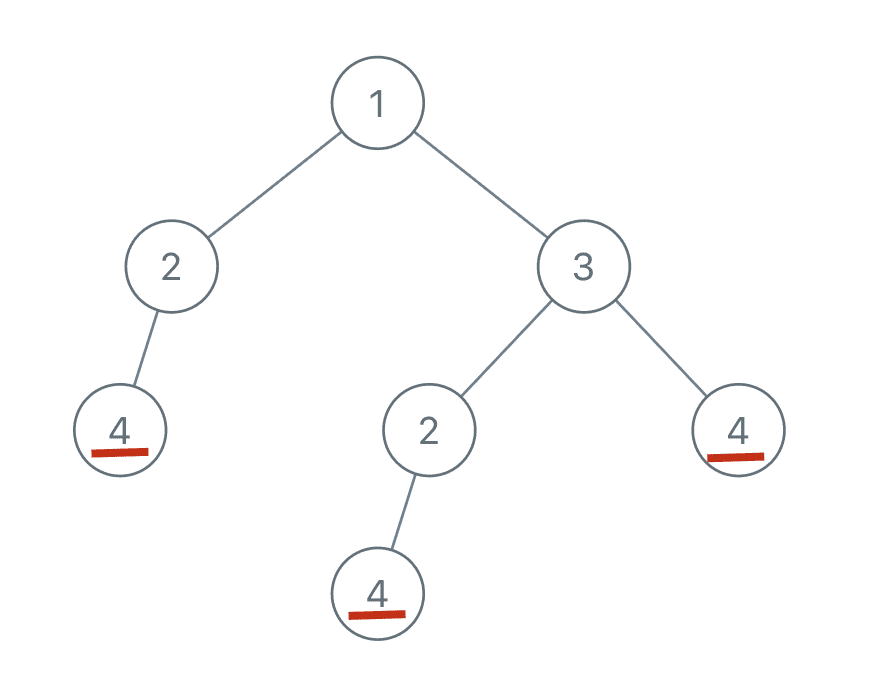
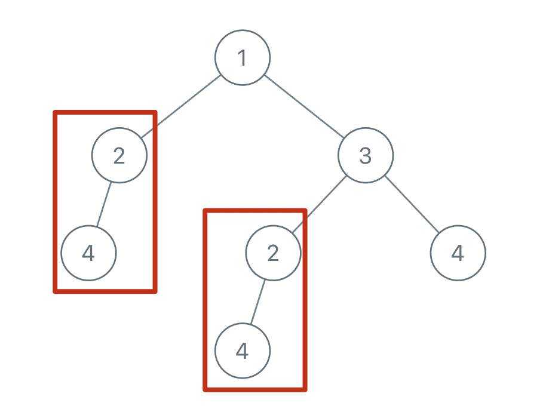
还是老套路，先思考，对于某一个节点，它应该做什么 。
比如说，你站在图中这个节点 2 上：
如果你想知道以自己为根的子树是不是重复的，是否应该被加入结果列表中，你需要知道什么信息？
你需要知道以下两点 ：
1、以我为根的这棵二叉树（子树）长啥样 ？
2、以其他节点为根的子树都长啥样 ？
好，那我们一个一个来解决，先来思考，我如何才能知道以自己为根的二叉树长啥样 ？
其实看到这个问题，就可以判断本题要使用「后序遍历」框架来解决：
1 2 3 4 5 void traverse (TreeNode root) traverse(root.left); traverse(root.right); }
为什么？很简单呀，我要知道以自己为根的子树长啥样，是不是得先知道我的左右子树长啥样，再加上自己，就构成了整棵子树的样子？
现在，明确了要用后序遍历，那应该怎么描述一棵二叉树的模样呢？我们前文 序列化和反序列化二叉树 其实写过了，二叉树的前序/中序/后序遍历结果可以描述二叉树的结构。
所以，我们可以通过拼接字符串的方式把二叉树序列化，看下代码：
1 2 3 4 5 6 7 8 9 10 11 12 13 String traverse (TreeNode root) { if (root == null) { return "#" ; } String left = traverse(root.left); String right = traverse(root.right); String subTree = left + "," + right + "," + root.val; return subTree; }
我们用非数字的特殊符#表示空指针，并且用字符,分隔每个二叉树节点值，这属于序列化二叉树的套路了，不多说。
注意我们subTree是按照左子树、右子树、根节点这样的顺序拼接字符串，也就是后序遍历顺序。你完全可以按照前序或者中序的顺序拼接字符串，因为这里只是为了描述一棵二叉树的样子，什么顺序不重要。
这样，我们第一个问题就解决了，对于每个节点，递归函数中的subTree变量就可以描述以该节点为根的二叉树 。
现在我们解决第二个问题，我知道了自己长啥样，怎么知道别人长啥样 ？这样我才能知道有没有其他子树跟我重复对吧。
这很简单呀，我们借助一个外部数据结构，让每个节点把自己子树的序列化结果存进去，这样，对于每个节点，不就可以知道有没有其他节点的子树和自己重复了么？
初步思路可以使用HashSet记录子树，代码如下：
1 2 3 4 5 6 7 8 9 10 11 12 13 14 15 16 17 18 19 20 21 22 23 24 HashSet<String> memo = new HashSet<>(); LinkedList<TreeNode> res = new LinkedList<>(); String traverse (TreeNode root) { if (root == null) { return "#" ; } String left = traverse(root.left); String right = traverse(root.right); String subTree = left + "," + right+ "," + root.val; if (memo.contains(subTree)) { res.add(root); } else { memo.add(subTree); } return subTree; }
但是呢，这有个问题，如果出现多棵重复的子树，结果集res中必然出现重复，而题目要求不希望出现重复。
为了解决这个问题，可以把HashSet升级成HashMap，额外记录每棵子树的出现次数：
1 2 3 4 5 6 7 8 9 10 11 12 13 14 15 16 17 18 19 20 21 22 23 24 25 26 27 28 29 30 31 HashMap<String, Integer> memo = new HashMap<>(); LinkedList<TreeNode> res = new LinkedList<>(); List<TreeNode> findDuplicateSubtrees (TreeNode root) { traverse(root); return res; } String traverse (TreeNode root) { if (root == null) { return "#" ; } String left = traverse(root.left); String right = traverse(root.right); String subTree = left + "," + right+ "," + root.val; int freq = memo.getOrDefault(subTree, 0 ); if (freq == 1 ) { res.add(root); } memo.put(subTree, freq + 1 ); return subTree; }
二叉树的序列化和反序列化 所谓的序列化不过就是把结构化的数据「打平」，其实就是在考察二叉树的遍历方式 。
1. 前序遍历解法 1 2 3 4 5 6 7 8 9 10 11 12 13 14 15 LinkedList<Integer> res; void traverse (TreeNode root) if (root == null) { res.addLast(-1 ); return ; } res.addLast(root.val); traverse(root.left); traverse(root.right); }
调用 traverse 函数之后，你是否可以立即想出这个 res 列表中元素的顺序是怎样的？比如如下二叉树（# 代表空指针 null），可以直观看出前序遍历做的事情：
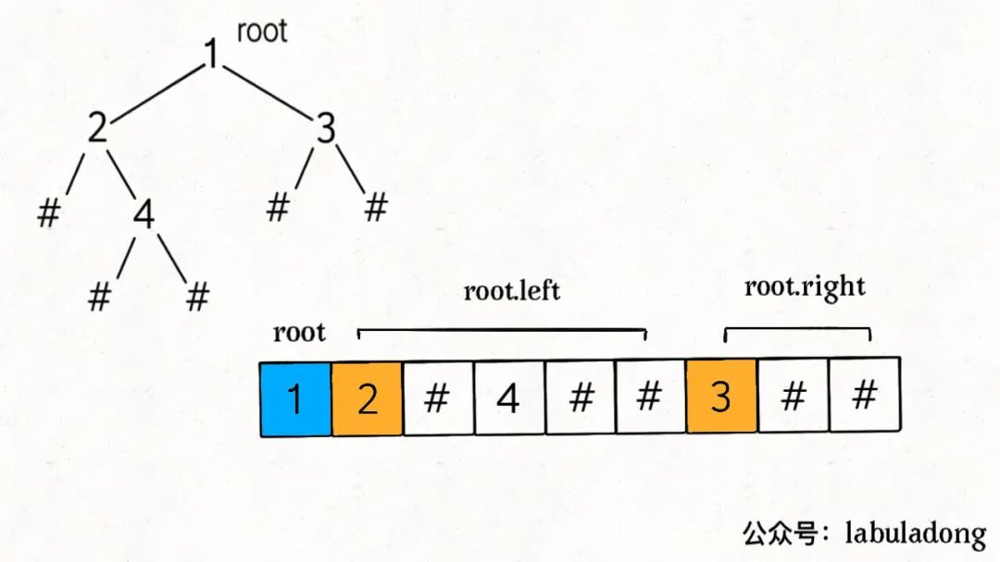
那么 res = [1,2,-1,4,-1,-1,3,-1,-1]，这就是将二叉树「打平」到了一个列表中，其中 -1 代表 null。
那么，将二叉树打平到一个字符串中也是完全一样的：
1 2 3 4 5 6 7 8 9 10 11 12 13 14 15 16 17 18 19 20 21 String SEP = "," ; String NULL = "#" ; StringBuilder sb = new StringBuilder(); void traverse (TreeNode root, StringBuilder sb) if (root == null) { sb.append(NULL ).append(SEP); return ; } sb.append(root.val).append(SEP); traverse(root.left, sb); traverse(root.right, sb); }
StringBuilder 可以用于高效拼接字符串，所以也可以认为是一个列表，用 ,作为分隔符，用 # 表示空指针 null，调用完 traverse 函数后，StringBuilder 中的字符串应该是 1,2,#,4,#,#,3,#,#,。
至此，我们已经可以写出序列化函数 serialize 的代码了：
1 2 3 4 5 6 7 8 9 10 11 12 13 14 15 16 17 18 19 20 21 22 23 24 String SEP = "," ; String NULL = "#" ; String serialize (TreeNode root) { StringBuilder sb = new StringBuilder(); serialize(root, sb); return sb.toString(); } void serialize (TreeNode root, StringBuilder sb) if (root == null) { sb.append(NULL ).append(SEP); return ; } sb.append(root.val).append(SEP); serialize(root.left, sb); serialize(root.right, sb); }
现在，思考一下如何写 deserialize 函数，将字符串反过来构造二叉树。
首先我们可以把字符串转化成列表：
1 2 String data = "1,2,#,4,#,#,3,#,#," ; String[] nodes = data.split("," );
这样，nodes 列表就是二叉树的前序遍历结果，问题转化为：如何通过二叉树的前序遍历结果还原一棵二叉树？
PS：一般语境下，单单前序遍历结果是不能还原二叉树结构的，因为缺少空指针的信息，至少要得到前、中、后序遍历中的两种才能还原二叉树。但是这里的 node列表包含空指针的信息，所以只使用 node 列表就可以还原二叉树。
根据我们刚才的分析，nodes 列表就是一棵打平的二叉树。
那么，反序列化过程也是一样，先确定根节点 root，然后遵循前序遍历的规则，递归生成左右子树即可:
1 2 3 4 5 6 7 8 9 10 11 12 13 14 15 16 17 18 19 20 21 22 23 24 25 26 TreeNode deserialize (String data) { LinkedList<String> nodes = new LinkedList<>(); for (String s : data.split(SEP)) { nodes.addLast(s); } return deserialize(nodes); } TreeNode deserialize (LinkedList<String> nodes) { if (nodes.isEmpty()) return null; String first = nodes.removeFirst(); if (first.equals(NULL )) return null; TreeNode root = new TreeNode(Integer.parseInt(first)); root.left = deserialize(nodes); root.right = deserialize(nodes); return root; }
我们发现，根据树的递归性质，nodes 列表的第一个元素就是一棵树的根节点，所以只要将列表的第一个元素取出作为根节点，剩下的交给递归函数去解决即可。
2. 后续遍历解法 我们首先实现 serialize序列化方法，只需要稍微修改辅助方法即可：
1 2 3 4 5 6 7 8 9 10 11 12 13 14 void serialize (TreeNode root, StringBuilder sb) if (root == null) { sb.append(NULL ).append(SEP); return ; } serialize(root.left, sb); serialize(root.right, sb); sb.append(root.val).append(SEP); }
我们把对 StringBuilder 的拼接操作放到了后续遍历的位置，后序遍历导致结果的顺序发生变化：
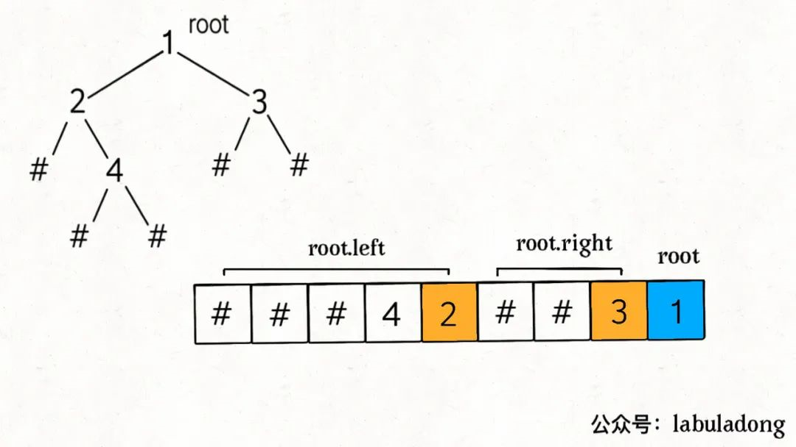
root 的值是列表的最后一个元素。我们应该从后往前取出列表元素，先用最后一个元素构造 root，然后递归调用生成 root 的左右子树。注意，根据上图，从后往前在 nodes 列表中取元素，一定要先构造 root.right 子树，后构造 root.left 子树 。
完整代码如下：
1 2 3 4 5 6 7 8 9 10 11 12 13 14 15 16 17 18 19 20 21 22 TreeNode deserialize (String data) { LinkedList<String> nodes = new LinkedList<>(); for (String s : data.split(SEP)) { nodes.addLast(s); } return deserialize(nodes); } TreeNode deserialize (LinkedList<String> nodes) { if (nodes.isEmpty()) return null; String last = nodes.removeLast(); if (last.equals(NULL )) return null; TreeNode root = new TreeNode(Integer.parseInt(last)); root.right = deserialize(nodes); root.left = deserialize(nodes); return root; }
3. 中序遍历解法 中序遍历的方式行不通，因为无法实现反序列化方法 deserialize。
序列化方法 serialize 依然容易，只要把字符串的拼接操作放到中序遍历的位置就行了：
1 2 3 4 5 6 7 8 9 10 11 12 13 void serialize (TreeNode root, StringBuilder sb) if (root == null) { sb.append(NULL ).append(SEP); return ; } serialize(root.left, sb); sb.append(root.val).append(SEP); serialize(root.right, sb); }
但是，我们刚才说了，要想实现反序列方法，首先要构造 root 节点。前序遍历得到的 nodes 列表中，第一个元素是 root 节点的值；后序遍历得到的 nodes列表中，最后一个元素是 root 节点的值。
你看上面这段中序遍历的代码，root 的值被夹在两棵子树的中间，也就是在nodes 列表的中间，我们不知道确切的索引位置，所以无法找到 root 节点，也就无法进行反序列化。
4. 层级遍历解法 层级遍历二叉树的代码框架：
1 2 3 4 5 6 7 8 9 10 11 12 13 14 15 16 17 18 19 20 21 22 void traverse (TreeNode root) if (root == null) return ; Queue<TreeNode> q = new LinkedList<>(); q.offer(root); while (!q.isEmpty()) { TreeNode cur = q.poll(); System.out.println(root.val); if (cur.left != null) { q.offer(cur.left); } if (cur.right != null) { q.offer(cur.right); } } }
序列化方法：
1 2 3 4 5 6 7 8 9 10 11 12 13 14 15 16 17 18 19 20 21 22 23 24 25 26 27 28 String SEP = "," ; String NULL = "#" ; String serialize (TreeNode root) { if (root == null) return "" ; StringBuilder sb = new StringBuilder(); Queue<TreeNode> q = new LinkedList<>(); q.offer(root); while (!q.isEmpty()) { TreeNode cur = q.poll(); if (cur == null) { sb.append(NULL ).append(SEP); continue ; } sb.append(cur.val).append(SEP); q.offer(cur.left); q.offer(cur.right); } return sb.toString(); }
层级遍历序列化得出的结果如下图：
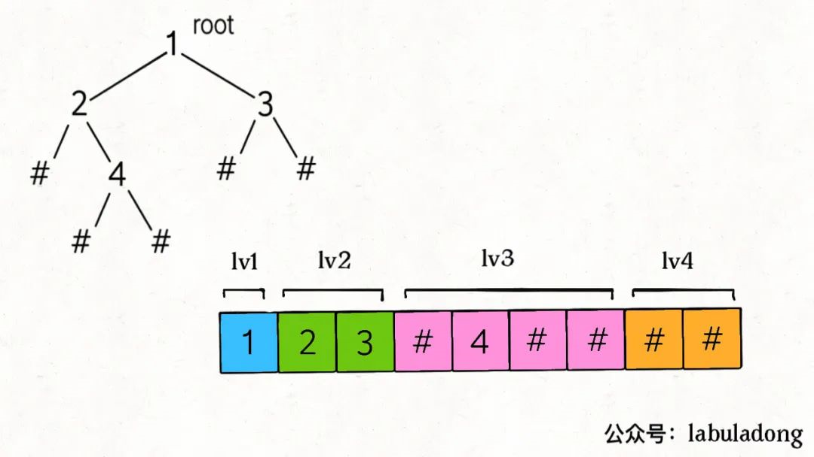
可以看到，每一个非空节点都会对应两个子节点，那么反序列化的思路也是用队列进行层级遍历，同时用索引 i 记录对应子节点的位置 ：
1 2 3 4 5 6 7 8 9 10 11 12 13 14 15 16 17 18 19 20 21 22 23 24 25 26 27 28 29 30 31 32 33 TreeNode deserialize (String data) { if (data.isEmpty()) return null; String[] nodes = data.split(SEP); TreeNode root = new TreeNode(Integer.parseInt(nodes[0 ])); Queue<TreeNode> q = new LinkedList<>(); q.offer(root); for (int i = 1 ; i < nodes.length; ) { TreeNode parent = q.poll(); String left = nodes[i++]; if (!left.equals(NULL )) { parent.left = new TreeNode(Integer.parseInt(left)); q.offer(parent.left); } else { parent.left = null; } String right = nodes[i++]; if (!right.equals(NULL )) { parent.right = new TreeNode(Integer.parseInt(right)); q.offer(parent.right); } else { parent.right = null; } } return root; }
扁平化嵌套列表迭代器 这玩意儿不就是棵 N 叉树吗？叶子节点是Integer类型，其val字段非空；其他节点都是List<NestedInteger>类型，其val字段为空，但是list字段非空，装着孩子节点 。
比如说输入是[[1,1],2,[1,1]]，其实就是如下树状结构：
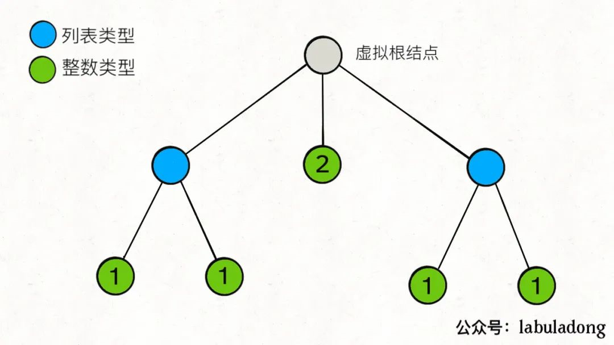
好的，刚才题目说什么来着？把一个NestedInteger扁平化对吧？这不就等价于遍历一棵 N 叉树的所有「叶子节点」吗 ？我把所有叶子节点都拿出来，不就可以作为迭代器进行遍历了吗？
这个框架可以遍历所有节点，而我们只对整数型的NestedInteger感兴趣，也就是我们只想要「叶子节点」，所以traverse函数只要在到达叶子节点的时候把val加入结果列表即可：
1 2 3 4 5 6 7 8 9 10 11 12 13 14 15 16 17 18 19 20 21 22 23 24 25 26 27 28 29 30 31 32 33 34 35 36 class NestedIterator implements Iterator < private Iterator<Integer> it; public NestedIterator (List<NestedInteger> nestedList) List<Integer> result = new LinkedList<>(); for (NestedInteger node : nestedList) { traverse(node, result); } this .it = result.iterator(); } public Integer next () return it.next(); } public boolean hasNext () return it.hasNext(); } private void traverse (NestedInteger root, List<Integer> result) if (root.isInteger()) { result.add(root.getInteger()); return ; } for (NestedInteger child : root.getList()) { traverse(child, result); } } }
这样，我们就把原问题巧妙转化成了一个 N 叉树的遍历问题，并且得到了解法。
我们的解法中，一次性算出了所有叶子节点的值，全部装到result列表，也就是内存中，next和hasNext方法只是在对result列表做迭代。如果输入的规模非常大，构造函数中的计算就会很慢，而且很占用内存。
一般的迭代器求值应该是「惰性的」，也就是说，如果你要一个结果，我就算一个（或是一小部分）结果出来，而不是一次把所有结果都算出来。
调用hasNext时，如果nestedList的第一个元素是列表类型，则不断展开这个元素，直到第一个元素是整数类型 。
由于调用next方法之前一定会调用hasNext方法，这就可以保证每次调用next方法的时候第一个元素是整数型，直接返回并删除第一个元素即可。
看一下代码：
1 2 3 4 5 6 7 8 9 10 11 12 13 14 15 16 17 18 19 20 21 22 23 24 25 26 27 public class NestedIterator implements Iterator < private LinkedList<NestedInteger> list ; public NestedIterator (List<NestedInteger> nestedList) list = new LinkedList<>(nestedList); } public Integer next () return list .remove(0 ).getInteger(); } public boolean hasNext () while (!list .isEmpty() && !list .get(0 ).isInteger()) { List<NestedInteger> first = list .remove(0 ).getList(); for (int i = first.size() - 1 ; i >= 0 ; i--) { list .addFirst(first.get(i)); } } return !list .isEmpty(); } }
二叉树的最近公共祖先
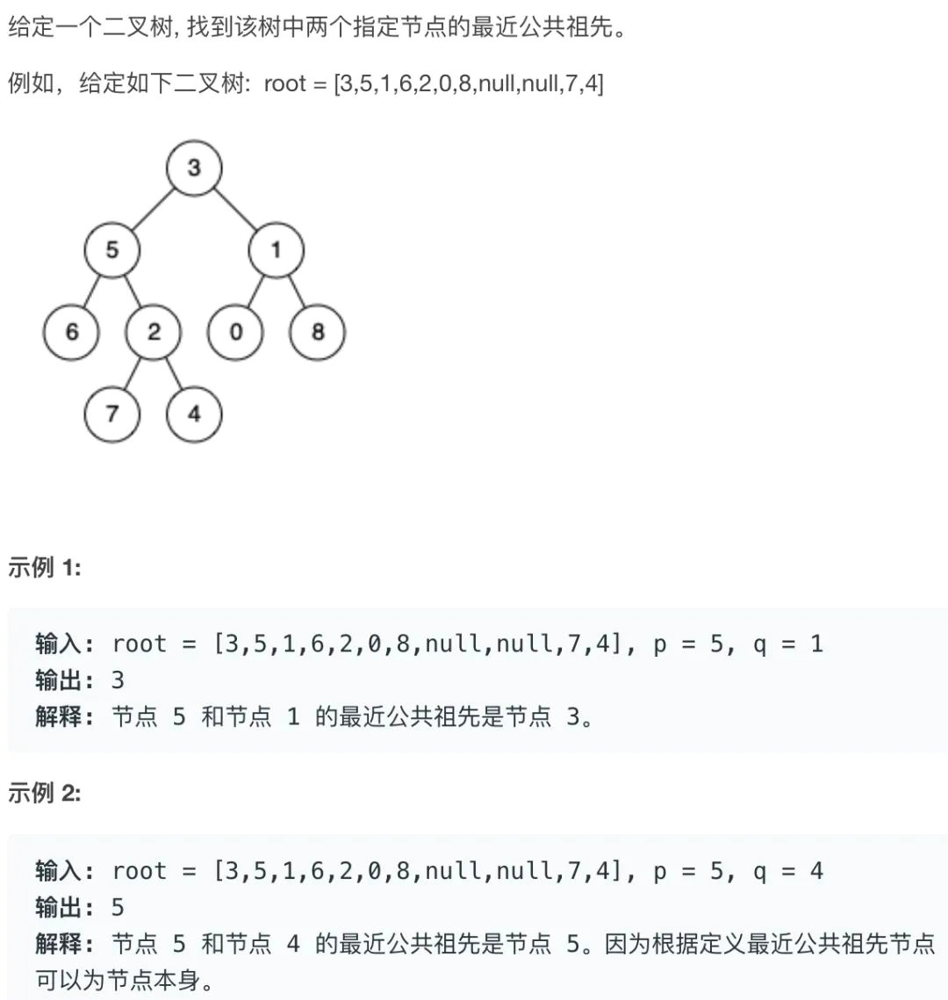
首先看第一个问题，这个函数是干嘛的 ？或者说，你给我描述一下lowestCommonAncestor这个函数的「定义」吧。
描述：给该函数输入三个参数root，p，q，它会返回一个节点。
情况 1，如果p和q都在以root为根的树中，函数返回的即使p和q的最近公共祖先节点。
情况 2，那如果p和q都不在以root为根的树中怎么办呢？函数理所当然地返回null呗。
情况 3，那如果p和q只有一个存在于root为根的树中呢？函数就会返回那个节点。
题目说了输入的p和q一定存在于以root为根的树中，但是递归过程中，以上三种情况都有可能发生，所以说这里要定义清楚，后续这些定义都会在代码中体现。
OK，第一个问题就解决了，把这个定义记在脑子里，无论发生什么，都不要怀疑这个定义的正确性，这是我们写递归函数的基本素养。
然后来看第二个问题，这个函数的参数中，变量是什么 ？或者说，你描述一个这个函数的「状态」吧。
描述：函数参数中的变量是root，因为根据框架，lowestCommonAncestor(root)会递归调用root.left和root.right；至于p和q，我们要求它俩的公共祖先，它俩肯定不会变化的。
第二个问题也解决了，你也可以理解这是「状态转移」，每次递归在做什么？不就是在把「以root为根」转移成「以root的子节点为根」，不断缩小问题规模嘛？
最后来看第三个问题，得到函数的递归结果，你该干嘛 ？或者说，得到递归调用的结果后，你做什么「选择」？
这就像动态规划系列问题，怎么做选择，需要观察问题的性质，找规律。那么我们就得分析这个「最近公共祖先节点」有什么特点呢？刚才说了函数中的变量是root参数，所以这里都要围绕root节点的情况来展开讨论。
先想 base case，如果root为空，肯定得返回null。如果root本身就是p或者q，比如说root就是p节点吧，如果q存在于以root为根的树中，显然root就是最近公共祖先；即使q不存在于以root为根的树中，按照情况 3 的定义，也应该返回root节点。
现在就要面临真正的挑战了，用递归调用的结果left和right来搞点事情。根据刚才第一个问题中对函数的定义，我们继续分情况讨论：
情况 1，如果p和q都在以root为根的树中，那么left和right一定分别是p和q（从 base case 看出来的）。
情况 2，如果p和q都不在以root为根的树中，直接返回null。
情况 3，如果p和q只有一个存在于root为根的树中，函数返回该节点。
明白了上面三点，可以直接看解法代码了：
1 2 3 4 5 6 7 8 9 10 11 12 13 14 15 16 17 18 TreeNode lowestCommonAncestor (TreeNode root, TreeNode p, TreeNode q) { if (root == null) return null; if (root == p || root == q) return root; TreeNode left = lowestCommonAncestor(root.left, p, q); TreeNode right = lowestCommonAncestor(root.right, p, q); if (left != null && right != null) { return root; } if (left == null && right == null) { return null; } return left == null ? right : left; }
计算完全二叉树的节点数 完全二叉树 如下图，每一层都是紧凑靠左 排列的：
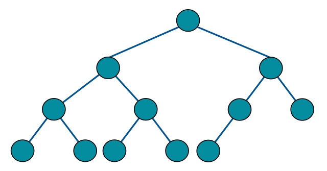
满二叉树 如下图，是一种特殊的完全二叉树，每层都是是满的，像一个稳定的三角形：
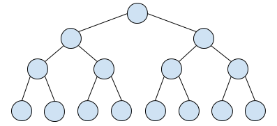
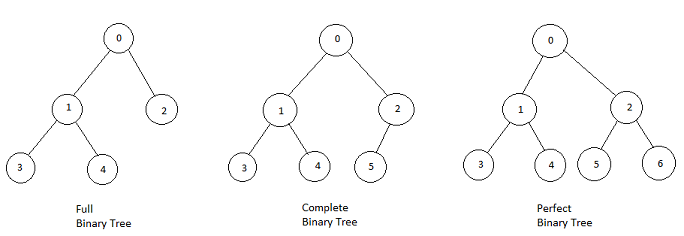
如果是一个普通 二叉树，显然只要向下面这样遍历一边即可，时间复杂度 O(N)：
1 2 3 4 public int countNodes (TreeNode root) if (root == null) return 0 ; return 1 + countNodes(root.left) + countNodes(root.right); }
那如果是一棵满 二叉树，节点总数就和树的高度呈指数关系，时间复杂度 O(logN)：
1 2 3 4 5 6 7 8 9 10 public int countNodes (TreeNode root) int h = 0 ; while (root != null) { root = root.left; h++; } return (int )Math.pow (2 , h) - 1 ; }
完全 二叉树比普通二叉树特殊，但又没有满二叉树那么特殊，计算它的节点总数，可以说是普通二叉树和完全二叉树的结合版，先看代码：
1 2 3 4 5 6 7 8 9 10 11 12 13 14 15 16 17 18 19 public int countNodes (TreeNode root) TreeNode l = root, r = root; int hl = 0 , hr = 0 ; while (l != null) { l = l.left; hl++; } while (r != null) { r = r.right; hr++; } if (hl == hr) { return (int )Math.pow (2 , hl) - 1 ; } return 1 + countNodes(root.left) + countNodes(root.right); }
一棵完全二叉树的两棵子树，至少有一棵是满二叉树 ：
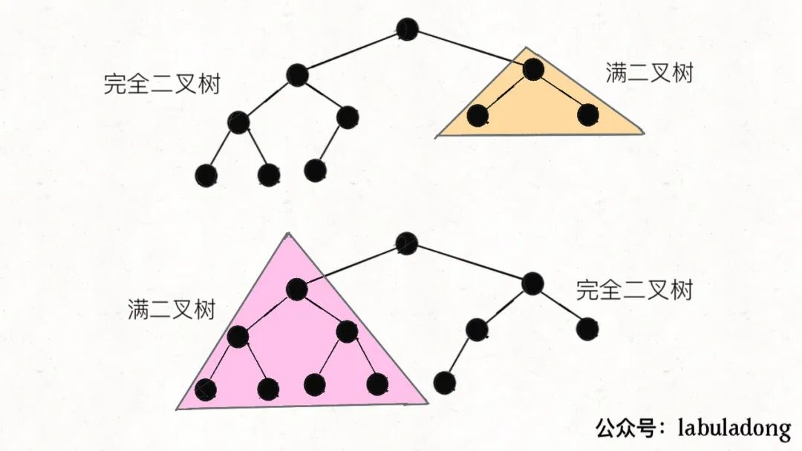
由于完全二叉树的性质，其子树一定有一棵是满的，所以一定会触发hl == hr，只消耗 O(logN) 的复杂度而不会继续递归。
综上，算法的递归深度就是树的高度 O(logN)，每次递归所花费的时间就是 while 循环，需要 O(logN)，所以总体的时间复杂度是 O(logN*logN)。
二叉搜索树(Binary Search Tree，BST) 首先，BST 的特性大家应该都很熟悉了：
1、对于 BST 的每一个节点node，左子树节点的值都比node的值要小，右子树节点的值都比node的值大。
2、对于 BST 的每一个节点node，它的左侧子树和右侧子树都是 BST。
二叉搜索树并不算复杂，但我觉得它构建起了数据结构领域的半壁江山，直接基于 BST 的数据结构有 AVL 树，红黑树等等，拥有了自平衡性质，可以提供 logN 级别的增删查改效率；还有 B+ 树，线段树等结构都是基于 BST 的思想来设计的。
从做算法题的角度来看 BST，除了它的定义，还有一个重要的性质：BST 的中序遍历结果是有序的（升序） 。
算法实践 寻找第K小的元素
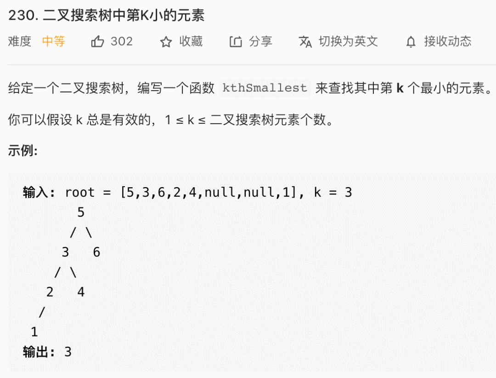
这个需求很常见吧，一个直接的思路就是升序排序，然后找第k个元素呗。BST 的中序遍历其实就是升序排序的结果，找第k个元素肯定不是什么难事。
1 2 3 4 5 6 7 8 9 10 11 12 13 14 15 16 17 18 19 20 21 22 23 24 25 int kthSmallest (TreeNode root, int k) traverse(root, k); return res; } int res = 0 ;int rank = 0 ;void traverse (TreeNode root, int k) if (root == null) { return ; } traverse(root.left, k); rank++; if (k == rank) { res = root.val; return ; } traverse(root.right, k); }
那么回到这个问题，想找到第k小的元素，或者说找到排名为k的元素，如果想达到对数级复杂度，关键也在于每个节点得知道他自己排第几。
比如说你让我查找排名为k的元素，当前节点知道自己排名第m，那么我可以比较m和k的大小：
1、如果m == k，显然就是找到了第k个元素，返回当前节点就行了。
2、如果k < m，那说明排名第k的元素在左子树，所以可以去左子树搜索第k个元素。
3、如果k > m，那说明排名第k的元素在右子树，所以可以去右子树搜索第k - m - 1个元素。
这样就可以将时间复杂度降到O(logN)了。
那么，如何让每一个节点知道自己的排名呢？
这就是我们之前说的，需要在二叉树节点中维护额外信息。每个节点需要记录，以自己为根的这棵二叉树有多少个节点 。
也就是说，我们TreeNode中的字段应该如下：
1 2 3 4 5 6 7 class TreeNode { int val; int size; TreeNode left; TreeNode right; }
有了size字段，外加 BST 节点左小右大的性质，对于每个节点node就可以通过node.left推导出node的排名，从而做到我们刚才说到的对数级算法。
当然，size字段需要在增删元素的时候需要被正确维护，力扣提供的TreeNode是没有size这个字段的，所以我们这道题就只能利用 BST 中序遍历的特性实现了，但是我们上面说到的优化思路是 BST 的常见操作，还是有必要理解的。
BST转化累加树
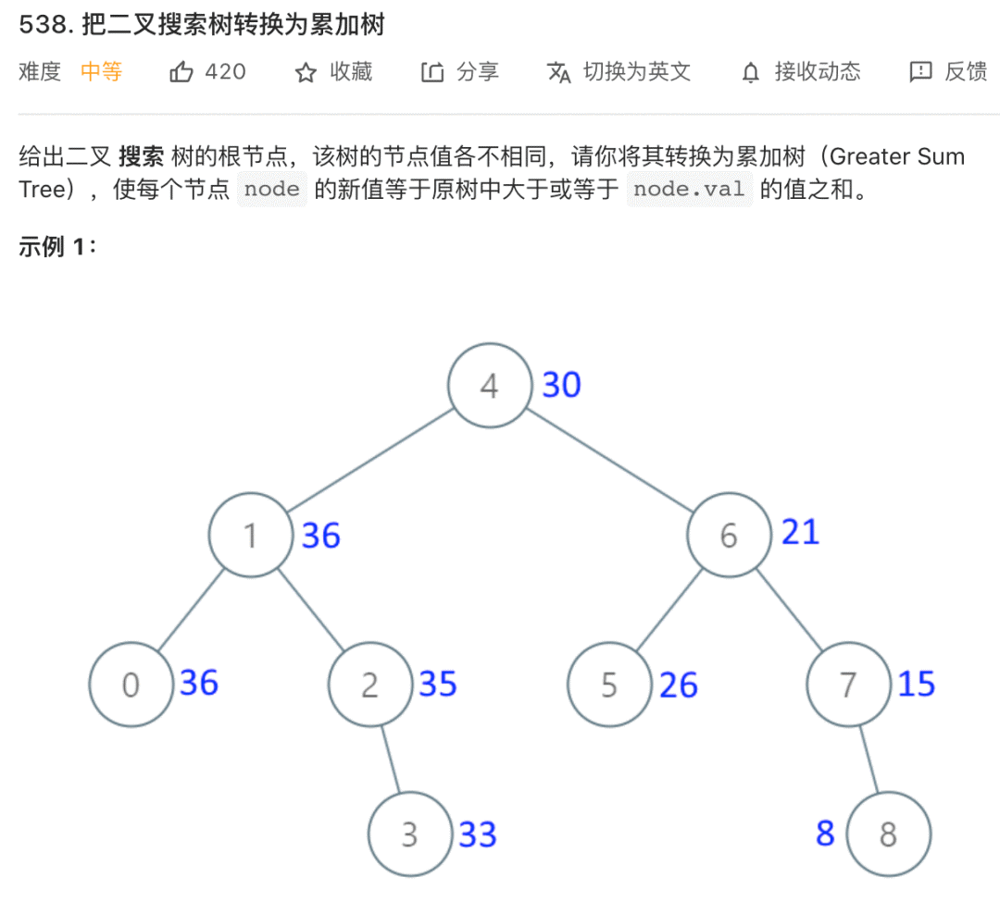
题目应该不难理解，比如图中的节点 5，转化成累加树的话，比 5 大的节点有 6，7，8，加上 5 本身，所以累加树上这个节点的值应该是 5+6+7+8=26。
我们只需要把递归顺序修改一下就可以实现降序打印节点的值了
1 2 3 4 5 6 7 8 9 void traverse (TreeNode root) if (root == null) return ; traverse(root.right); print(root.val); traverse(root.left); }
这段代码可以从大到小降序打印 BST 节点的值，如果维护一个外部累加变量sum，然后把sum赋值给 BST 中的每一个节点，不就将 BST 转化成累加树了吗 ？
最终代码：
1 2 3 4 5 6 7 8 9 10 11 12 13 14 15 16 17 18 TreeNode convertBST (TreeNode root) { traverse(root); return root; } int sum = 0 ;void traverse (TreeNode root) if (root == null) { return ; } traverse(root.right); sum += root.val; root.val = sum; traverse(root.left); }
这道题就解决了，核心还是 BST 的中序遍历特性，只不过我们修改了递归顺序，降序遍历 BST 的元素值，从而契合题目累加树的要求。
BST 相关的问题，要么利用 BST 左小右大的特性提升算法效率，要么利用中序遍历的特性满足题目的要求，也就这么些事儿吧。
判断BST的合法性 根据 BST 的定义，root的整个左子树都要小于root.val，整个右子树都要大于root.val 。
1 2 3 4 5 6 7 8 9 10 11 12 13 14 15 boolean isValidBST (TreeNode root) { return isValidBST(root, null, null); } boolean isValidBST (TreeNode root, TreeNode min, TreeNode max) { if (root == null) return true ; if (min != null && root.val <= min.val) return false ; if (max != null && root.val >= max.val) return false ; return isValidBST(root.left, min, root) && isValidBST(root.right, root, max); }
我们通过使用辅助函数，增加函数参数列表，在参数中携带额外信息，将这种约束传递给子树的所有节点，这也是二叉树算法的一个小技巧吧 。
在BST中搜索一个数 根据target和root.val的大小比较，就能排除一边。
1 2 3 4 5 6 7 8 9 10 boolean isInBST (TreeNode root, int target) { if (root == null) return false ; if (root.val == target) return true ; if (root.val < target) return isInBST(root.right, target); if (root.val > target) return isInBST(root.left, target); }
我们对原始框架进行改造，抽象出一套针对 BST 的遍历框架 ：
1 2 3 4 5 6 7 8 void BST (TreeNode root, int target) if (root.val == target) if (root.val < target) BST(root.right, target); if (root.val > target) BST(root.left, target); }
在BST中插入一个数 插入一个数，就是先找到插入位置，然后进行插入操作
上一个问题，我们总结了 BST 中的遍历框架，就是「找」的问题。直接套框架，加上「改」的操作即可。一旦涉及「改」，函数就要返回TreeNode类型，并且对递归调用的返回值进行接收 。
1 2 3 4 5 6 7 8 9 10 11 TreeNode insertIntoBST (TreeNode root, int val) { if (root == null) return new TreeNode(val); if (root.val < val) root.right = insertIntoBST(root.right, val); if (root.val > val) root.left = insertIntoBST(root.left, val); return root; }
在BST中删除一个数 这个问题稍微复杂，跟插入操作类似，先「找」再「改」，先把框架写出来再说：
1 2 3 4 5 6 7 8 9 10 11 12 TreeNode deleteNode (TreeNode root, int key) { if (root.val == key) { } else if (root.val > key) { root.left = deleteNode(root.left, key); } else if (root.val < key) { root.right = deleteNode(root.right, key); } return root; }
找到目标节点了，比方说是节点A，如何删除这个节点，这是难点。因为删除节点的同时不能破坏 BST 的性质。有三种情况，用图片来说明。
情况 1 ：A恰好是末端节点，两个子节点都为空，那么它可以当场去世了。
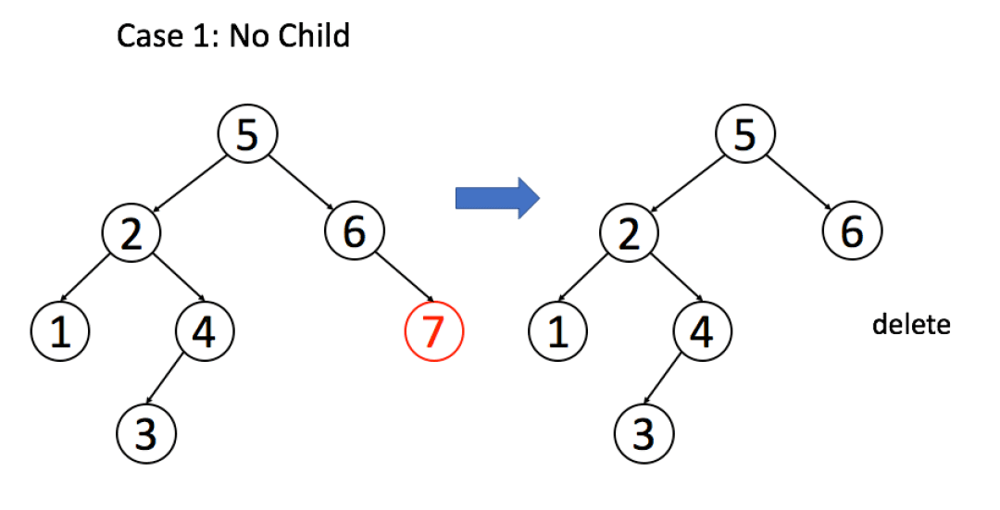
1 2 if (root.left == null && root.right == null) return null;
情况 2 ：A只有一个非空子节点，那么它要让这个孩子接替自己的位置。
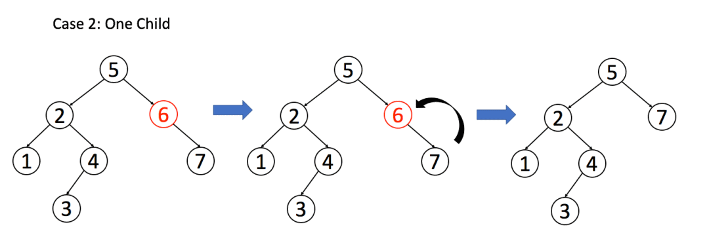
1 2 3 if (root.left == null) return root.right;if (root.right == null) return root.left;
情况 3 ：A有两个子节点，麻烦了，为了不破坏 BST 的性质，A必须找到左子树中最大的那个节点，或者右子树中最小的那个节点来接替自己。我们以第二种方式讲解。
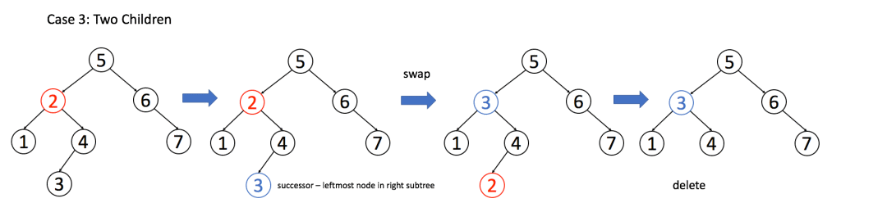
1 2 3 4 5 6 7 8 if (root.left != null && root.right != null) { TreeNode minNode = getMin(root.right); root.val = minNode.val; root.right = deleteNode(root.right, minNode.val); }
三种情况分析完毕，填入框架，简化一下代码：
1 2 3 4 5 6 7 8 9 10 11 12 13 14 15 16 17 18 19 20 21 22 23 TreeNode deleteNode (TreeNode root, int key) { if (root == null) return null; if (root.val == key) { if (root.left == null) return root.right; if (root.right == null) return root.left; TreeNode minNode = getMin(root.right); root.val = minNode.val; root.right = deleteNode(root.right, minNode.val); } else if (root.val > key) { root.left = deleteNode(root.left, key); } else if (root.val < key) { root.right = deleteNode(root.right, key); } return root; } TreeNode getMin (TreeNode node) { while (node.left != null) node = node.left; return node; }
删除操作就完成了。注意一下，这个删除操作并不完美，因为我们一般不会通过root.val = minNode.val修改节点内部的值来交换节点，而是通过一系列略微复杂的链表操作交换root和minNode两个节点。
因为具体应用中，val域可能会是一个复杂的数据结构，修改起来非常麻烦；而链表操作无非改一改指针，而不会去碰内部数据。
不过这里我们暂时忽略这个细节，旨在突出 BST 基本操作的共性，以及借助框架逐层细化问题的思维方式。